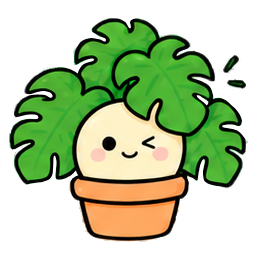
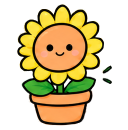
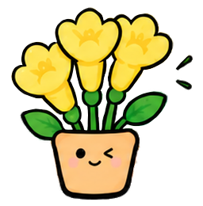
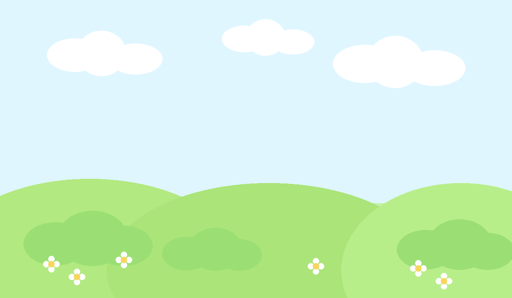

당신과 닮은 식물은?
식물 MBTI
테스트
당신의 성격과 닮은 식물을 찾아드려요!



총 20문항간단한 선택으로 알아보는 나!
16가지 식물 유형귀여운 캐릭터와 함께!
나만의 식물 성격강점과 매력을 확인!
식물 궁합까지잘 맞는 친구도 알려드려요!
J LAB
결과를 열심히
분석 중이에요...
당신의 답변을 바탕으로
딱 맞는 식물을 찾고 있어요!

0%
당신과 닮은 식물을 찾고 있어요...